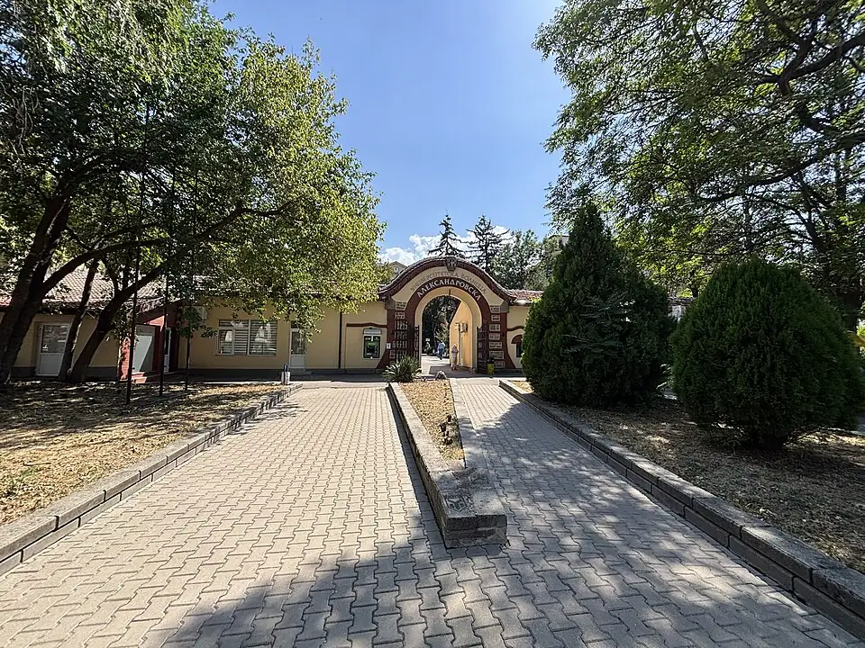
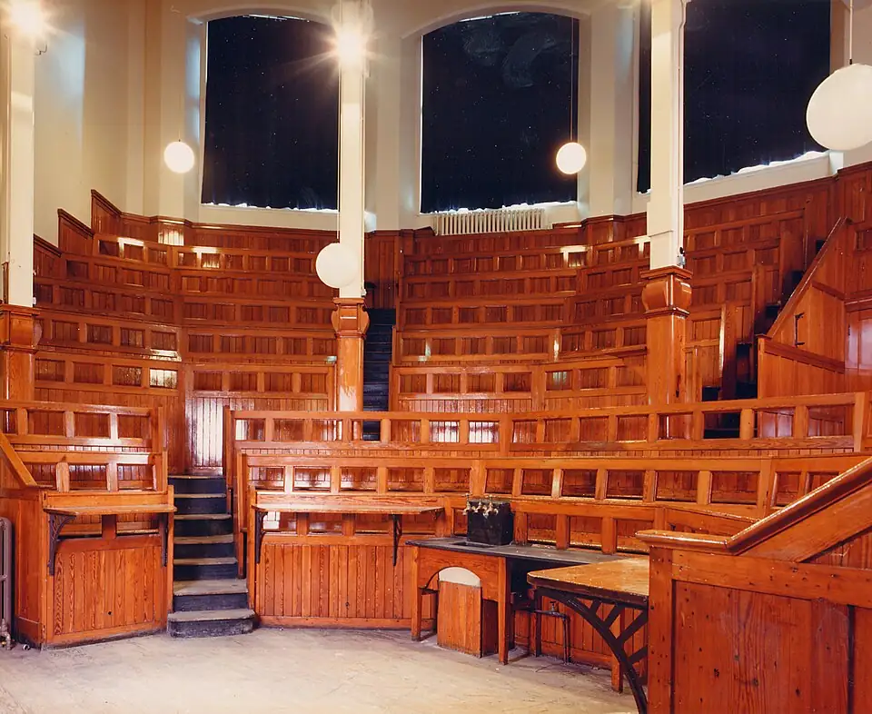

EU-recognised degree
A degree from an EU member state, with routes to practise or specialise within the European Union.
Bulgaria is an EU member, so its medical universities teach to EU standards and award degrees recognised across the European Union. Fees are higher than in Central Asia, and so is the bar for admission.

A degree from an EU member state, with routes to practise or specialise within the European Union.
State medical universities with decades of experience teaching in English.
Easy travel across Europe, plus a high standard of student life.
Know before you go: Unlike most MBBS-abroad destinations, Bulgarian medical universities usually set an entrance exam, typically in biology and chemistry, alongside your school-leaving marks. Prepare for it.
A starting shortlist, not a ranking. Before applying, we check each programme’s length, teaching language, internship and recognition against the rules of the country where you plan to practise.
One of the oldest medical schools in south-eastern Europe.
Apply with GradmireCoastal city and a popular choice for international students.
Apply with GradmireStrong research and clinical partnerships.
Apply with GradmireLong-running English-taught programme.
Apply with GradmireSource: NMC Foreign Medical Graduate Licentiate Regulations, 2021
We look at your marks, budget and plans, including where you want to practise, and explain the trade-offs honestly.
We compare universities on recognition, clinical training, language support and the total six-year cost.
We prepare and check your documents, then submit your application to the universities you choose.
Once a university admits you, we help you check the offer and the fee schedule before you pay anything.
We guide your invitation, visa file and medical tests, and prepare you for embassy steps.
Pre-departure briefing, travel planning and help with hostel, registration and arrival formalities.
Varies by university and city. Some universities charge the first year’s fee plus a one-time admission fee.
Hostel, food, local transport and day-to-day expenses. Capital cities cost more.
Flights, visa and medical tests, insurance, document attestation and winter clothing where relevant.
These are indicative planning ranges (last reviewed October 2026), not a quote. Fees and exchange rates change, so we confirm the current fee schedule with the university before you pay. Try the study cost calculator to plan a full budget.
Students from outside the EU apply for a Bulgarian long-stay (type D) visa for study once the university admits them.
After arrival, apply for a long-term residence permit through Bulgaria’s Migration Directorate and renew it during your studies.
Visa rules depend on your nationality and change often. This is a planning summary, not legal advice. Always follow the current checklist from the embassy and your university. See how we help with visas.
Four seasons, with warm summers and cold but manageable winters.
International restaurants and groceries in Sofia and Varna; vegetarian food is easy to find.
EU rules allow some part-time work for students with the right residence status. Check current conditions before you rely on it.

Most countries ask foreign medical graduates to pass a licensing exam and a period of supervised practice. Check your home regulator’s rules early.
Graduates can prepare for other countries’ licensing routes, such as the USMLE (USA), the UKMLA/PLAB (UK) or the AMC exams (Australia), each with its own eligibility rules.
Specialisation options depend on where you are licensed. Plan early if you are aiming for a residency or postgraduate seat.
Usually yes. Most state medical universities test biology and chemistry, and some interview applicants or test their English too.
Bulgarian medical universities are listed in the World Directory of Medical Schools. Practising outside the EU still means passing that country’s licensing exam, such as the USMLE, PLAB/UKMLA or India’s FMGE/NExT.
Recognition is decided by the medical regulator in the country where you want to practise, not by the university. Most regulators require a listed university, a minimum course length with internship, and a pass in their own licensing exam. Check those rules before you apply.
It is the global list of medical schools that regulators such as the ECFMG (USA) rely on. Being listed is necessary but not enough on its own: the programme you join must also meet your home regulator’s rules.
Lectures are in English, but clinical training means talking to patients. Most universities teach the local language from year one, and students who take it seriously find hospital rotations much easier.
Add tuition, living and test costs, then set the total against your expected salary.
Use the calculatorCompare courses side by side before you choose.
Compare coursesTrack application deadlines and see which are urgent.
Track deadlinesEstimate an equivalent percentage or GPA scale as a starting point.
Convert a gradeTalk through your marks, budget and goals with a Gradmire counsellor. Counselling is free and there’s no obligation.
Book a free consultation